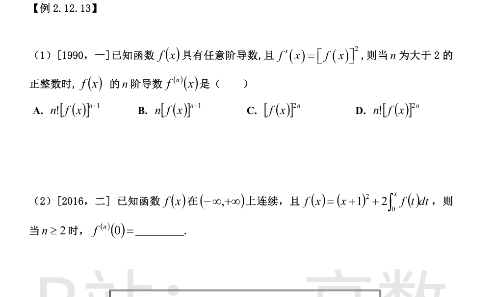
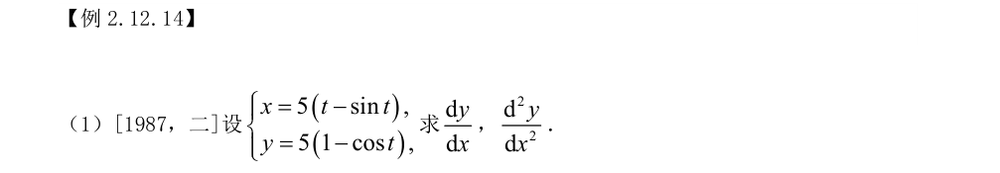
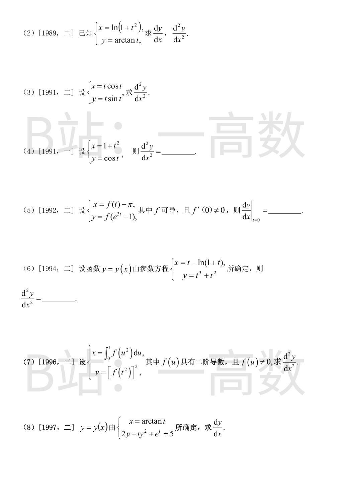
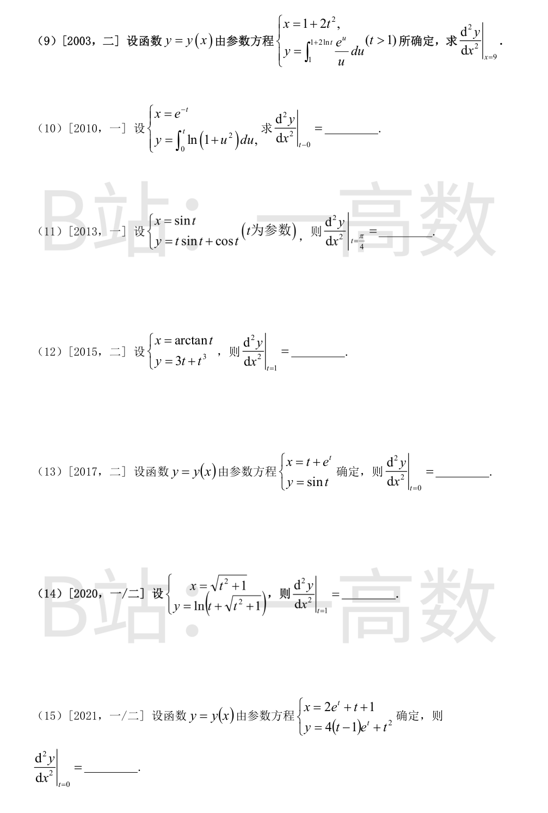

$$f''=2ff'=2f^3,\qquad f'''=2\cdot 3f^2 f'=3!\,f^4$$
数学归纳：设 $f^{(k)}=k!f^{k+1}$，则
$$f^{(k+1)}=k!(k+1)f^k f'=(k+1)!\,f^{k+2}$$
故对一切 $n$：$f^{(n)}=n![f(x)]^{n+1}$。选 A。
$f(0)=1$。由 f 连续，两边求导：
$$f'(x)=2(x+1)+2f(x),\qquad f'(0)=2+2=4$$
再求导：
$$f''(x)=2+2f'(x),\qquad f''(0)=2+8=10$$
$n\ge 3$ 时逐阶求导得 $f^{(n)}(x)=2f^{(n-1)}(x)$，故
$$f^{(n)}(0)=10\cdot 2^{n-2}=5\cdot 2^{n-1}\quad(n\ge 2).$$

$$\frac{dx}{dt}=5(1-\cos t),\qquad \frac{dy}{dt}=5\sin t$$
$$\frac{dy}{dx}=\frac{5\sin t}{5(1-\cos t)}=\frac{\sin t}{1-\cos t}$$
$$\frac{d^2y}{dx^2}=\frac{\frac{d}{dt}\left(\frac{\sin t}{1-\cos t}\right)}{\frac{dx}{dt}}=\frac{\cos t(1-\cos t)-\sin^2 t}{(1-\cos t)^2\cdot 5(1-\cos t)}=\frac{\cos t-1}{5(1-\cos t)^3}=-\frac{1}{5(1-\cos t)^3}.$$


$$\frac{dx}{dt}=\frac{2t}{1+t^2},\qquad \frac{dy}{dt}=\frac{1}{1+t^2}$$
$$\frac{dy}{dx}=\frac{1/(1+t^2)}{2t/(1+t^2)}=\frac{1}{2t}$$
$$\frac{d^2y}{dx^2}=\frac{-\frac{1}{2t^2}}{\frac{2t}{1+t^2}}=-\frac{1+t^2}{4t^3}.$$
$$\frac{dx}{dt}=\cos t-t\sin t,\qquad \frac{dy}{dt}=\sin t+t\cos t$$
$$\frac{dy}{dx}=\frac{\sin t+t\cos t}{\cos t-t\sin t}$$
对 t 求导（分子 $N'=2\cos t-t\sin t$，分母 $D'=-2\sin t-t\cos t$）：
$$\frac{d}{dt}\left(\frac{N}{D}\right)=\frac{(2\cos t-t\sin t)(\cos t-t\sin t)+(\sin t+t\cos t)(2\sin t+t\cos t)}{D^2}$$
展开分子 $=2\cos^2 t+2\sin^2 t+t^2(\sin^2 t+\cos^2 t)=t^2+2$，故
$$\frac{d^2y}{dx^2}=\frac{t^2+2}{(\cos t-t\sin t)^2}\cdot\frac{1}{\cos t-t\sin t}=\frac{t^2+2}{(\cos t-t\sin t)^3}.$$
$$\frac{dx}{dt}=2t,\qquad \frac{dy}{dt}=-\sin t\ \Rightarrow\ \frac{dy}{dx}=-\frac{\sin t}{2t}$$
$$\frac{d^2y}{dx^2}=\frac{\frac{\sin t-t\cos t}{2t^2}}{2t}=\frac{\sin t-t\cos t}{4t^3}.$$
$$\frac{dx}{dt}=f'(t),\qquad \frac{dy}{dt}=f'(e^{3t}-1)\cdot 3e^{3t}$$
$t=0$：$\frac{dx}{dt}=f'(0)\ne 0$，$\frac{dy}{dt}=3f'(0)$，
$$\frac{dy}{dx}\bigg|_{t=0}=\frac{3f'(0)}{f'(0)}=3.$$
$$\frac{dx}{dt}=1-\frac{1}{1+t}=\frac{t}{1+t},\qquad \frac{dy}{dt}=3t^2+2t$$
$$\frac{dy}{dx}=\frac{t(3t+2)}{t/(1+t)}=(3t+2)(1+t)=3t^2+5t+2$$
$$\frac{d^2y}{dx^2}=\frac{6t+5}{t/(1+t)}=\frac{(6t+5)(1+t)}{t}.$$
$$\frac{dx}{dt}=f(t^2),\qquad \frac{dy}{dt}=2f(t^2)\cdot f'(t^2)\cdot 2t=4t\,f(t^2)\,f'(t^2)$$
$$\frac{dy}{dx}=\frac{4t f(t^2)f'(t^2)}{f(t^2)}=4t f'(t^2)$$
$$\frac{d^2y}{dx^2}=\frac{4f'(t^2)+4t\cdot f''(t^2)\cdot 2t}{f(t^2)}=\frac{4f'(t^2)+8t^2 f''(t^2)}{f(t^2)}.$$
第二个方程对 t 求导（y 是 t 的函数）：
$$2y'-y^2-2tyy'+e^t=0\ \Rightarrow\ y'=\frac{y^2-e^t}{2(1-ty)}$$
又 $\frac{dx}{dt}=\frac{1}{1+t^2}$，故
$$\frac{dy}{dx}=(1+t^2)\cdot\frac{y^2-e^t}{2(1-ty)}=\frac{(1+t^2)(y^2-e^t)}{2(1-ty)}.$$
x=9 时 $2t^2=8$，$t=2$（t>1）。
$$\frac{dx}{dt}=4t,\qquad \frac{dy}{dt}=\frac{e^{1+2\ln t}}{1+2\ln t}\cdot\frac{2}{t}=\frac{e\,t^2}{1+2\ln t}\cdot\frac{2}{t}=\frac{2et}{1+2\ln t}$$
$$\frac{dy}{dx}=\frac{2et/(1+2\ln t)}{4t}=\frac{e}{2(1+2\ln t)}$$
$$\frac{d^2y}{dx^2}=\frac{-\frac{e}{t(1+2\ln t)^2}}{4t}=-\frac{e}{4t^2(1+2\ln t)^2}\bigg|_{t=2}=-\frac{e}{16(1+2\ln 2)^2}.$$
$$\frac{dx}{dt}=-e^{-t},\qquad \frac{dy}{dt}=\ln(1+t^2)\ \Rightarrow\ \frac{dy}{dx}=-e^t\ln(1+t^2)$$
$$\frac{d^2y}{dx^2}=\frac{-e^t\ln(1+t^2)-e^t\cdot\frac{2t}{1+t^2}}{-e^{-t}}=e^{2t}\left[\ln(1+t^2)+\frac{2t}{1+t^2}\right]\bigg|_{t=0}=0.$$
$$\frac{dx}{dt}=\cos t,\qquad \frac{dy}{dt}=\sin t+t\cos t-\sin t=t\cos t$$
$$\frac{dy}{dx}=t,\qquad \frac{d^2y}{dx^2}=\frac{1}{\cos t}\bigg|_{t=\pi/4}=\sqrt{2}.$$
$$\frac{dx}{dt}=\frac{1}{1+t^2},\qquad \frac{dy}{dt}=3+3t^2\ \Rightarrow\ \frac{dy}{dx}=3(1+t^2)^2$$
$$\frac{d^2y}{dx^2}=\frac{12t(1+t^2)}{\frac{1}{1+t^2}}=12t(1+t^2)^2\bigg|_{t=1}=12\cdot 4=48.$$
$$\frac{dx}{dt}=1+e^t,\qquad \frac{dy}{dt}=\cos t\ \Rightarrow\ \frac{dy}{dx}=\frac{\cos t}{1+e^t}$$
$$\frac{d^2y}{dx^2}=\frac{-\sin t(1+e^t)-e^t\cos t}{(1+e^t)^3}\bigg|_{t=0}=\frac{0-1}{8}=-\frac{1}{8}.$$
$$\frac{dx}{dt}=\frac{t}{\sqrt{t^2+1}},\qquad \frac{dy}{dt}=\frac{1+\frac{t}{\sqrt{t^2+1}}}{t+\sqrt{t^2+1}}=\frac{1}{\sqrt{t^2+1}}$$
$$\frac{dy}{dx}=\frac{1}{t},\qquad \frac{d^2y}{dx^2}=\frac{-\frac{1}{t^2}}{\frac{t}{\sqrt{t^2+1}}}=-\frac{\sqrt{t^2+1}}{t^3}\bigg|_{t=1}=-\sqrt{2}.$$
$$\frac{dx}{dt}=2e^t+1,\qquad \frac{dy}{dt}=4\left[e^t+(t-1)e^t\right]+2t=4te^t+2t=2t(2e^t+1)$$
$$\frac{dy}{dx}=\frac{2t(2e^t+1)}{2e^t+1}=2t$$
$$\frac{d^2y}{dx^2}=\frac{2}{2e^t+1}\bigg|_{t=0}=\frac{2}{3}.$$